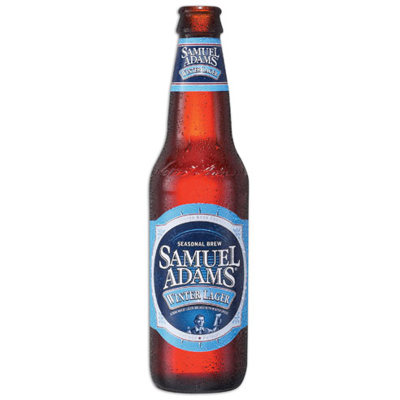
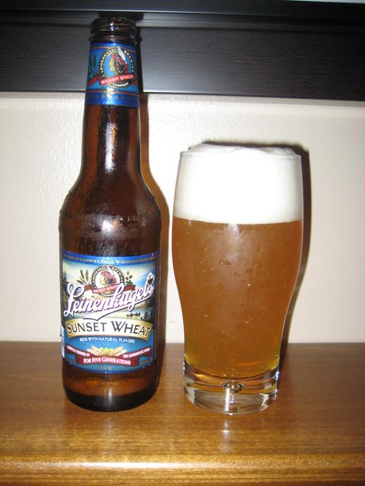
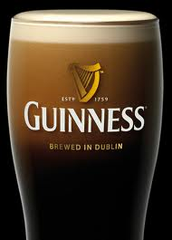
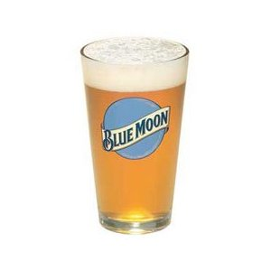
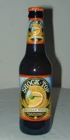
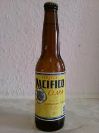

Home
Top Beer
Brewery Listing
About
Contact us
Top Beer List
Locally Brewed:
Hangar 24 Amarillo Pale Ale
Sierra Nevada Kellerweis
Other Brewers:
Samuel Adams Winter Lager

Leinenkugel's Sunset Wheat

Guinness

Blue Moon

Shock Top

Pacifico
